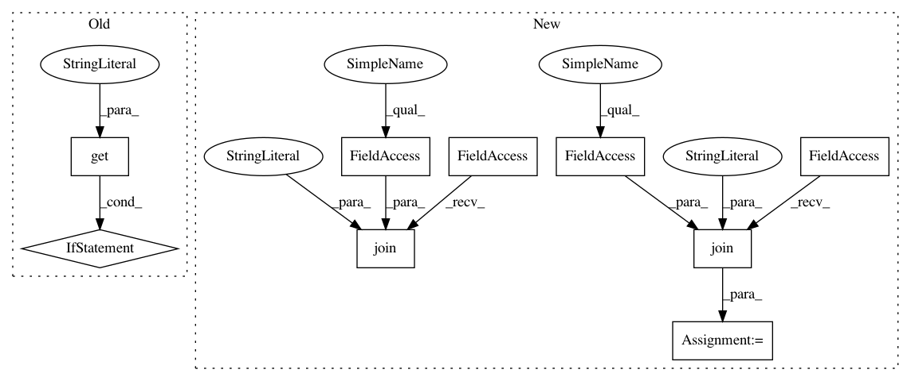

f34e4fbad1b40627dfdc92c6eaf56969cba77c06,test/data/test_builtin_datasets.py,TestDataset,test_penntreebank,#TestDataset#,35
Before Change
bptt_len=30)
// Delete the dataset after we"re done to save disk space on CI
if os.environ.get("TRAVIS") == "true":
datafile = os.path.join(self.project_root, ".data", "penn-treebank")
conditional_remove(datafile)
def test_text_classification(self):
// smoke test to ensure ag_news dataset works properly
datadir = os.path.join(self.project_root, ".data")
After Change
// Delete the dataset after we"re done to save disk space on CI
datafile = os.path.join(self.project_root, ".data", "ptb.train.txt")
conditional_remove(datafile)
datafile = os.path.join(self.project_root, ".data", "ptb.test.txt")
conditional_remove(datafile)
datafile = os.path.join(self.project_root, ".data", "ptb.valid.txt")
conditional_remove(datafile)
def test_text_classification(self):
// smoke test to ensure ag_news dataset works properly
In pattern: SUPERPATTERN
Frequency: 3
Non-data size: 9
Instances
Project Name: pytorch/text
Commit Name: f34e4fbad1b40627dfdc92c6eaf56969cba77c06
Time: 2019-11-25
Author: 6156351+zhangguanheng66@users.noreply.github.com
File Name: test/data/test_builtin_datasets.py
Class Name: TestDataset
Method Name: test_penntreebank
Project Name: pytorch/text
Commit Name: f34e4fbad1b40627dfdc92c6eaf56969cba77c06
Time: 2019-11-25
Author: 6156351+zhangguanheng66@users.noreply.github.com
File Name: test/data/test_builtin_datasets.py
Class Name: TestDataset
Method Name: test_penntreebank
Project Name: ruotianluo/self-critical.pytorch
Commit Name: 79fc09d66d3f4736b9fb4f5756a78725719f3808
Time: 2017-02-10
Author: rluo@ttic.edu
File Name: train.py
Class Name:
Method Name: train